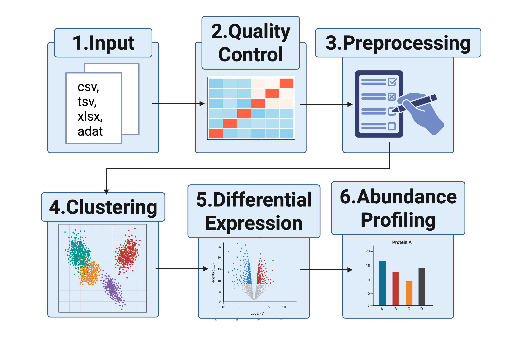

ProtPipe2 provides reproducible workflows for downstream proteomics analysis through the ProtPipe R package and a Shiny interface. The package supports data import into SummarizedExperiment, quality control, filtering, normalization, imputation, batch correction, dimensionality reduction, clustering, differential intensity analysis, pathway analysis, and abundance profiling. For a no-code interface, use our web application which you can launch from here
Installation
if (!requireNamespace("pak", quietly = TRUE)) {
install.packages("pak", repos = "https://cran.rstudio.com")
}
pak::pak("NIH-CARD/ProtPipe2", dependencies = TRUE)
library(ProtPipe2)If the installation step fails on a Bioconductor dependency, install BiocManager and retry after installing the missing package:
install.packages("BiocManager", repos = "https://cran.rstudio.com")
BiocManager::install("<missing-package>")Quick start with bundled example data
library(ProtPipe2)
library(SummarizedExperiment)
data("neuron_differentiation_intensities")
data("neuron_differentiation_metadata")
data("ipsc_stem_cell_genes")
# 1. Create a SummarizedExperiment from the bundled tables
se <- ProtPipe2::create_se(
data = neuron_differentiation_intensities,
sample_metadata = neuron_differentiation_metadata,
creation_method = "bundled neuron differentiation example"
)
# 2. Plot protein group counts
ProtPipe2::plot_pg_counts(se, condition = "differentiation_day")
# Prepare the object for PCA, limma, and heatmaps
se_ready <- se |>
ProtPipe2::median_normalize() |>
ProtPipe2::impute_left_dist()
# 3. Plot PCA
ProtPipe2::plot_PCs(se_ready, condition = "differentiation_day")
# 4. Run limma differential expression (day 28 vs day 0)
de_day0_vs_day28 <- ProtPipe2::do_limma_binary(
se_ready,
condition = "differentiation_day",
control_group = "day_0",
treatment_group = "day_28"
)
ProtPipe2::plot_volcano(de_day0_vs_day28, label_col = "PG.Genes")
# 5. Plot a heatmap using bundled iPSC stem cell markers
p<-ProtPipe2::plot_proteomics_heatmap(
se_ready,
protmeta_col = "PG.Genes",
genes = ipsc_stem_cell_genes$Gene,
condition = "differentiation_day",
cluster_rows = TRUE,
cluster_cols = FALSE,
title = "Stem cell markers across differentiation"
)